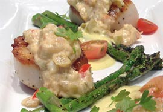
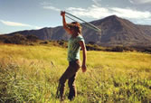
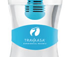

The top of our logo represents a wave of water. The wave is essential; it’s in motion and it’s playful. It’s begging you to jump in.
August is Dive Month at Travaasa® Experiential Resorts. Dive into our fresh food in Austin, with much of it harvested on our own farm. Dive into our new Hula-Hooping class and Kite Flying in Hana – you have to admit they sound like fun – then dive onto a massage table and enjoy my favorite, the Lomilomi massage. Just don’t dive into our infinity pools. They’re made for lounging.
Dive in and cool down with us at Travaasa this August. We hope to see you in the pool soon.
THIS MONTH |
|  |
Plunge into Dive Month with a delicious Southern seafood meal. Combine diver scallops and crawfish for a mouthwatering dish. Oh, and it's pretty healthy too. more |
|
Hurry, only a few days left to enter. We've teamed up with SpaFinder for an Adult Summer Boot Camp Sweepstakes. Enter by August 15, and you could win a three-day/two-night stay for two at Travaasa Austin. more |
|  |
You don't have to be a grown-up when you're on vacation. Immerse yourself in Hawaiian culture, and remember what it feels like to be a kid again with Hula-Hooping Class and Kite Flying at Travaasa Hana. more |
|  |
Less is more here at Travaasa. To further cut down on our carbon footprint, we'll be offering guests something much more Mother Earth friendly at check-in. more |
"Stayed recently two nights and had a blast. Excellent service, amazing views and a very cool philosophy. Just what the GF and I needed to get away for a few days. We spent one day by the gorgeous infinity pool and one day doing all of the activities. Jean’s Kitchen was amazing as well." - Foodiscoo, sharing his experience at Travaasa Austin on TripAdvisor |
ON THE HORIZON
September
Uncover and discover the best of life at Travaasa Austin and Hana as you step into fall. Try our two new outdoor adventure elements that bring more speed and adrenaline to the already exciting activities. For all of our yogis out there, join us as we celebrate National Yoga Month. Up for a bigger challenge in September? Show us your competitive side at the Hana Relay.
October
Reap your best memories during Harvest Month at Travaasa Austin and Hana this October. From Pilates Seeds for Centering to Go Nuts with Coconuts, our classes will put you in the fall mood. Join us at Travaasa Austin on October 18th for a dinner and concert benefitting The Joyful Horse Project, or at Travaasa Hana during Aloha Week, which kicks off October 19th.
|
|